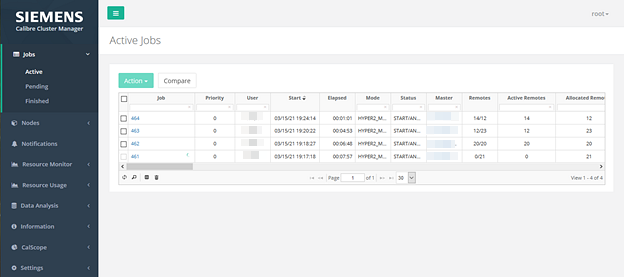
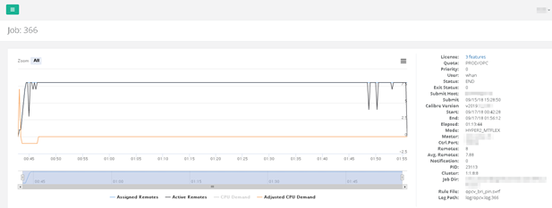

This procedure
describes how to submit jobs that run under CalCM TAT and use the
budget defined for the jobs.
Prerequisites
The
“progress meter” feature, supported by various Calibre setlayer operations,
must be enabled. The progress meter provides metrics that are used
by CalCM TAT for analysis and projection of runtime.
For applications, such as
Calibre OPCverify, the progress meter is enabled or disabled by
defining the progress_meter command in a Litho setup file. Refer
to the appropriate application documentation for information on
using the progress meter.
The
CalCM daemon (calcmd) must be running as described in “Starting the CalCM Daemon””.
Job
configuration file.
Procedure
- If you have not already done
so, open a browser and enter the server name on which the CalCM
daemon is running and the server port specified in the CalCM configuration
file (calcmd.conf). This displays the CalCM
dashboard web application. The default view is the Active Jobs page
in the Jobs menu item on the left side of
the displayed web page.
Note: The CalCM dashboard displays a web login page requesting
authentication information (user name and password). Some menus
and actionable items are only accessible at certain user levels.
For information on user authentication in the CalCM dashboard, see
the LDAP‑related configuration keywords in the calcm_http_server_app.tcl.
- Set your working directory
to CALCM_HOME/jobqueue.
This directory should contain
the calcm_submit_job script, which is automatically created when
you start the CalCM daemon.
- Enter the following command
to submit job1:
./calcm_submit_job $PWD/job1/job.conf
In the Jobs menu
item of the browser window, select the Pending Jobs menu
option. You should see job1 appear in this category. Depending on
various factors, such as the job configuration or resource status,
it may take a few minutes for the browser to update and display
the job.
- Enter the following command
to submit job2:
./calcm_submit_job $PWD/job2/job.conf
In the Jobs menu
item of the browser window, job2 should appear in the Pending Jobs
or Active Jobs category. Depending on various factors, such as the
job configuration or resource status, it may take a few minutes
for the browser to update and display the job.
Figure 1. Active
Jobs View
- Click the job ID in the first
column of the Active Jobs page to see current information for the
job.
Figure 2. Job Detail View
Results
When you run the Calibre job, the
CalCM TAT application uses information collected by the progress
meter to calculate the following for the job:
Computes the estimated total
remaining time.
Computes the CPU demand using
the time left (remaining budget), estimated total CPU time, and
queue length.
Computes a priority demand.
The TAT application uses the collected
information to:
Schedule an execution order
that minimizes resource demand conflicts.
Adjust the job priority to control
the execution order of operations and to give more resources to
jobs with a higher possibility of missing its budgeted time.